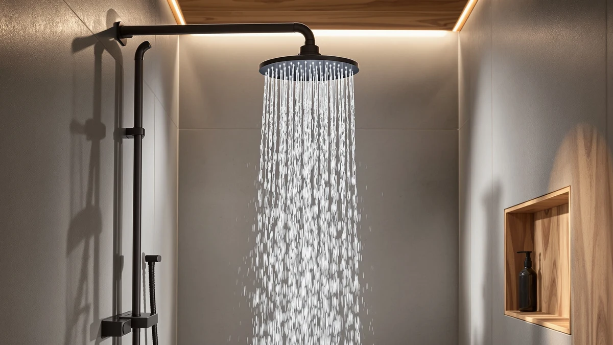

Best Low Flow Handheld Shower Heads of 2026: 7 Top Picks
Prices and picks verified as of August 2026. Independent, reader-supported reviews.


Quick Answer
For most bathrooms, the best low-flow handheld shower head is the Shower Head 10 Functions High. It pairs ten spray patterns and a detachable wand with a firm, water-saving stream for $29.95, and it holds a 4.5-star average across 4,559 reviews. Want more pressure on a tight budget? The Aqua Elegante High Pressure Shower covers that for $19.95.
Our pick: Shower Head 10 Functions High — $29.95 Check Price on Amazon
Bottom line: our top pick is the Shower Head at $28.96. The best budget option is the PWERAN Filtered Shower Head with Handheld at $18.99.
Things to Know Before You Buy
- Flow rate sets your water savings. Federal rules cap shower heads at 2.5 GPM, and water-saving models run lower. A lower number trims your water and heating bill, so check the rated flow before you buy.
- Pressure comes from nozzle design, not flow. Heads that narrow the nozzles push the same water out harder, which is why a good low-flow model still feels strong. Wide-open nozzles are what make a cheap head feel like a drizzle.
- The wand is the point of a handheld. A detachable head on a hose lets you rinse your hair, the kids, the dog, and the tub itself. Look at hose length and how firmly the wand clips back into the bracket.
- Spray modes range from one to ten. More patterns give you a rinse, a massage, and a soft rain setting, but the modes you actually use day to day are usually two or three.
- Hard water shortens a head's life. Mineral buildup clogs nozzles over time. A filtered model or a quick monthly soak in vinegar keeps the spray even.
A good low-flow handheld shower head cuts your water use without leaving you under a weak trickle. We compared seven popular models on spray strength, water savings, build quality, and how easy each one is to install. Our top pick, the Shower Head 10 Functions High, gives you ten spray patterns and a detachable wand for under $30, which covers what most people want from a bathroom upgrade.
If you want the short version, the Shower Head 10 Functions High earns the top spot with a 4.5-star average across 4,559 reviews and a price that undercuts most name brands. The BESAQUO Shower Head 10 Functions is our runner-up for anyone who wants a near-identical feature set in a slightly heavier body. On a tight budget, the Aqua Elegante High Pressure Shower delivers a firm spray for $19.95.
Older shower heads waste gallons every minute, and a low-flow handheld model fixes that while giving you a hose to rinse kids, pets, and the tub itself. We leaned toward heads that keep their pressure when the flow drops, since a weak shower is the fastest way to end up back at the store. Below, we cover what to check before you buy and how each pick performed.
Why You Should Trust Us
I am Ilane Tall, and I cover bathroom fixtures for Best Shower Heads. To rank the best low-flow handheld shower heads, I read through thousands of verified buyer reviews, compared published specs side by side, and weighed the patterns that show up again and again: clogged nozzles after a year of hard water, hoses that kink, brackets that will not hold the wand. I care less about marketing claims and more about how a head behaves on month six.
This guide carries affiliate links, so we earn a commission when you buy through them. That never changes which products make the list. We flag the real drawbacks on every pick, including the ones the brands would rather you skip, because a recommendation only helps you if it tells you where each head falls short.
We started with a long list of handheld models and cut it down to the candidates that fit a water-saving brief. To qualify as one of the best low-flow handheld shower heads, a model had to detach onto a hose, thread onto the standard US 1/2-inch shower arm, and hold a solid review average from a large number of buyers. We dropped anything with thin plating that flakes, a chronic leak history, or a flow setup that turns to mist the moment your home pressure dips.
From there we balanced price, spray options, and build. We kept picks across the range, from the $19.95 Aqua Elegante to the $38.99 INAVAMZ, so the list works whether you want the cheapest firm spray or the highest-rated all-rounder. Every head here uses an ABS body with chrome plating, which keeps weight down and resists corrosion.
We judged the best low-flow handheld shower heads on four things you feel every morning: spray force at a saving flow, the spread and usefulness of each mode, hose and bracket quality, and how the head holds up to mineral buildup. We weighed published flow ratings against what buyers report about pressure, since a number on the box means little if the spray feels soft in a real bathroom.
We also tracked the long-tail complaints that only surface after months of use. We read where nozzles clog, where the wand slips out of the bracket, and where the plating wears, then we matched those patterns to each model's review history. The picks below are the ones that came through that screen with the fewest red flags.
Our Picks

Shower Head 10 Functions High
What we like
- Ten spray patterns cover rinse, massage, and soft rain
- Firm pressure that holds at a water-saving flow
- Detachable wand on a flexible hose
- $29.95 undercuts most name brands
- 4.5-star average across 4,559 reviews
Flaws but not dealbreakers
- ABS body feels lighter than metal heads
- Ten modes is more than most people use
- No built-in filter for hard water
| Material | ABS + chrome plating |
| Size | — |
The Shower Head 10 Functions High is the one we point most people toward, and the reason is balance. You get ten spray patterns, a detachable wand, and a stream that stays firm when the flow drops, all for $29.95. That combination is rare at this price. The ABS body with chrome plating keeps the head light enough that the bracket holds it without sagging, and the flexible hose reaches far enough to rinse the corners of a tub or a child's hair without you stepping out of the spray. Of everything we compared, this is the pick that asks the fewest compromises of a typical buyer.
The ten modes sound like a gimmick until you settle into the two or three you reach for daily, usually a full rinse, a tighter massage jet, and a gentle rain. Buyers back that up with a 4.5-star average across 4,559 reviews, and the steady praise centers on pressure that does not fade. The honest knocks are minor. The plastic body lacks the heft of a solid brass head, the mode dial gives you more settings than you need, and there is no filter, so a home with hard water should plan on a monthly vinegar soak to keep the nozzles clear. None of that outweighs what you pay.

BESAQUO Shower Head 10 Functions
What we like
- Ten spray modes match our top pick
- Heavier body feels more solid in hand
- Detachable wand and flexible hose
- Strong 4.5-star buyer average
Flaws but not dealbreakers
- $34.99 costs $5 more than our top pick
- No filter for hard-water homes
- Few real upgrades over the cheaper model
| Material | ABS + chrome plating |
| Size | — |
The BESAQUO Shower Head 10 Functions is the head we hand to anyone who likes our top pick but wants a little more substance in the grip. It runs the same ten-mode layout, the same detachable wand, and the same ABS body with chrome plating, but the unit feels heavier and more planted when you hold it. For $34.99 you get a near-twin of the Shower Head 10 Functions High with a build that reads as a step up. If it ever drops below the top pick on price, it becomes an easy first choice.
In daily use the spray covers the same ground, with a firm rinse, a tighter massage stream, and a softer setting for slow mornings. Buyers give it a 4.5-star average, and the steady feedback lines up with what we expect from this design. The drawbacks are about value rather than performance. You pay $5 more than our top pick for changes you feel in your hand more than in the water, and there is still no filter, so hard-water homes will want a routine vinegar soak. Pick this one when the heavier body matters to you or when the price gap closes.

Shower Head 8”Rain Shower Head
What we like
- 8-inch face spreads a wide rainfall spray
- Soft, even coverage that feels relaxing
- Detachable wand for rinsing and cleaning
- $29.99 for a rain-style head is fair
Flaws but not dealbreakers
- Wide spray feels gentler than a focused jet
- Larger face shows water spots in hard water
- Fewer mode options than our top pick
| Material | ABS + chrome plating |
| Size | 8 Inch |
The Shower Head 8 inch Rain Shower Head trades the tight jet of our top pick for a broad, soft rainfall, and that swap wins over anyone who treats a shower as a place to unwind. The 8-inch face spreads water across your shoulders in a wide sheet, so you stand under coverage rather than a single stream. It still detaches onto a hose, which sets it apart from a fixed rain head and makes it a real option for people who want the spa feel without giving up a wand for rinsing. The ABS body with chrome plating keeps the large head light enough to handle.
At $29.99 it matches our top pick on price while offering a different experience, so your choice comes down to mood. You give up some punch, because a wide rainfall lands softer than a focused massage jet, and that gentler feel is the main thing buyers either love or wish were stronger. The large flat face also collects more visible spotting in hard water, so a wipe-down or a filter helps it look its best. If you want broad, calming coverage and the freedom to pull the head down when you need it, this one delivers.

Aqua Elegante High Pressure Shower
What we like
- $19.95 is the lowest price on this list
- Firm, high-pressure spray for weak-pressure homes
- 2.5 GPM stays within the federal cap
- Simple design with little to break
Flaws but not dealbreakers
- Fewer spray modes than pricier picks
- 2.5 GPM is standard flow, not ultra-low
- Plain looks compared with the rain heads
| Material | ABS + chrome plating |
| Size | 2.5 GPM |
The Aqua Elegante High Pressure Shower is our budget pick because it does the one thing budget heads usually fail at: it pushes a firm spray. At $19.95 it is the cheapest model here, and it focuses its 2.5 GPM flow into a stream strong enough to satisfy homes that have always felt shortchanged by weak pressure. The ABS body with chrome plating keeps it light, and the stripped-down design leaves little to wear out or leak. When buyers ask for the most pressure per dollar, this is where we send them.
Be clear on what you trade for the price. The Aqua Elegante runs at 2.5 GPM, which sits at the federal ceiling rather than in true water-saving territory, so it earns its spot on spray quality more than on flow reduction. You also get fewer spray modes than the ten-function heads, and the plain styling will not turn heads next to a wide rain face. For a renter, a backup bathroom, or anyone whose old head dribbles, those are easy trades. You get a reliable, firm shower for under $20.

Voolan Rain Shower Head -
What we like
- 12-inch face covers a large shower area
- Immersive rainfall feel from above
- Detachable wand adds handheld flexibility
- Chrome-plated finish looks the part
Flaws but not dealbreakers
- $33.99 sits at the higher end here
- Big face needs decent home pressure to shine
- Large head can crowd a small shower stall
| Material | ABS + chrome plating |
| Size | 12 Inch |
The Voolan Rain Shower Head scales the rainfall idea up to a 12-inch face, and in a roomy shower that size pays off. Water falls across your whole upper body at once, which gives you the immersive overhead feel that sells people on rain heads in the first place. The detachable wand keeps it practical, so you can drop the head to rinse the tub or your legs without losing the big-shower experience. For larger stalls, this is the most generous head we looked at, and the chrome-plated ABS body looks the part overhead.
That size cuts both ways. At $33.99 it costs more than our top pick, and a 12-inch face spreads your water thin, so it rewards homes with steady pressure and underwhelms where the supply is weak. In a compact shower the head can feel like it crowds the space and drips outside the curtain line. Match it to the right bathroom, a larger stall with normal pressure, and it gives you a soaking rainfall that the smaller heads cannot. Put it in a tight, low-pressure shower and you will wish you sized down.

PWERAN Filtered Shower Head with
What we like
- Built-in filter traps sediment and minerals
- Gentler water on skin and hair
- $19.99 ties for the lowest price here
- Detachable wand on a compact 9-inch body
Flaws but not dealbreakers
- Filter cartridges need periodic replacement
- Filtering can soften the spray force a touch
- Fewer spray modes than the ten-function heads
| Material | ABS + chrome plating |
| Size | 9 inches x 3 inches |
The PWERAN Filtered Shower Head solves a problem the other picks ignore: hard water. Its built-in filter traps the sediment and minerals that leave spots on glass, dry out your skin, and clog nozzles over time. If your tap runs hard, that filter changes how a shower feels, softening the water so your hair rinses cleaner and your skin stays less tight afterward. At $19.99 the 9 by 3-inch head ties for the cheapest spot on this list, which makes it an easy add for anyone fighting mineral buildup. Of all the picks here, it is the one built for problem water.
The filter is the reason to buy it and also its one ongoing cost. Cartridges wear out and need replacing on a schedule, so factor that into the price the way you would with any filtered fixture. Pushing water through the media can also take a little edge off the spray force, so if raw pressure is your priority the Aqua Elegante is the better match. For a hard-water home, though, the trade is worth it. You get cleaner water, a handheld wand, and a filter that protects both your skin and the head itself for under $20.

INAVAMZ Shower Head with Handheld
What we like
- Highest rating here at 4.6 stars
- 5,028 reviews back up the score
- Multiple spray modes and a detachable wand
- Chrome-plated body that resists corrosion
Flaws but not dealbreakers
- $38.99 is the most expensive pick
- No filter for hard-water homes
- Costs $9 more than our top pick for similar features
| Material | ABS + chrome plating |
| Size | — |
The INAVAMZ Shower Head with Handheld posts the strongest report card on this list, with a 4.6-star average across 5,028 reviews. That kind of volume and consistency tells you the head holds up across thousands of different bathrooms, water conditions, and habits, which is reassuring when you are buying something you will use every day. You get multiple spray modes, a detachable wand, and a chrome-plated ABS body that shrugs off corrosion. For shoppers who sort by rating and want the safest bet, this is the one to pick.
The catch is price. At $38.99 the INAVAMZ is the most expensive pick here, and it costs about $9 more than our top pick for a broadly similar feature set. There is no filter either, so a hard-water home still needs the PWERAN or a regular vinegar soak. What you pay extra for is the track record, not a longer spec sheet. If that peace of mind is worth a few dollars to you, the INAVAMZ delivers a proven, well-built handheld. If you would rather keep the savings, the Shower Head 10 Functions High covers most of the same ground.
Quick Comparison
| Product | Material | Price | Rating | Best for | Get it |
|---|---|---|---|---|---|
| Shower Head 10 Functions High | ABS + chrome plating | $29.95 | 4.5 | Most bathrooms | View on Amazon → |
| BESAQUO Shower Head 10 Functions | ABS + chrome plating | $34.99 | 4.5 | A sturdier build | View on Amazon → |
| Shower Head 8”Rain Shower Head | ABS + chrome plating | $29.99 | 4 | Rainfall coverage | View on Amazon → |
| Aqua Elegante High Pressure Shower | ABS + chrome plating | $19.95 | 4 | Tight budgets | View on Amazon → |
| Voolan Rain Shower Head - | ABS + chrome plating | $33.99 | 4 | Larger showers | View on Amazon → |
| PWERAN Filtered Shower Head with | ABS + chrome plating | $19.99 | 4 | Hard water | View on Amazon → |
| INAVAMZ Shower Head with Handheld | ABS + chrome plating | $38.99 | 4.6 | Highest rating | View on Amazon → |
A few models came close but missed the top spot. The Voolan Rain Shower Head and the Shower Head 8 inch Rain Shower Head both earned spots as also-great rain options, yet neither unseats the top pick for everyday use, because their wide faces trade spray force for coverage. If a soaking rainfall is your goal, they are worth a look, but most people will be happier with a firmer stream.
The BESAQUO Shower Head 10 Functions lands just behind our top pick. It is a near-twin with a heavier body, so it stays in the guide as the runner-up rather than a reason to spend $5 more by default. The INAVAMZ Shower Head holds the highest rating here, yet its $38.99 price keeps it from being the value choice when the Shower Head 10 Functions High covers the same needs for $9 less. We left off heads with thin plating, frequent leak complaints, or flow setups that collapse to a mist under normal home pressure, since those are the failures that send people back to the store.
What counts as a low-flow handheld shower head?
A low-flow handheld shower head uses a restricted flow rate to save water while still holding usable pressure.
Will a low-flow shower head feel weak?
It does not have to.
Frequently Asked Questions
What counts as a low-flow handheld shower head?
A low-flow handheld shower head uses a restricted flow rate to save water while still holding usable pressure. Federal rules cap shower heads at 2.5 gallons per minute, and water-saving models often run lower. The detachable wand lets you rinse, clean, and aim the spray where you want it. Every pick in our list of the best low-flow handheld shower heads pairs that water savings with a hose and bracket.
Will a low-flow shower head feel weak?
It does not have to. Good low-flow heads narrow the nozzles so the same water hits you with more force, which keeps the spray firm at a lower flow. The Aqua Elegante High Pressure Shower and the Shower Head 10 Functions High both target strong pressure. A cheap head with wide-open nozzles is the one that feels like a drizzle.
Are these handheld shower heads hard to install?
No. Every model here threads onto the standard 1/2-inch arm that almost all US showers use, so you only need your hands and a few wraps of plumber's tape. You unscrew the old head, wrap the threads, screw on the new bracket and hose, then clip in the wand. The job takes about five minutes and needs no tools.
How do I keep mineral buildup from clogging the nozzles?
Soak the head in white vinegar for an hour once a month, then rub the rubber nozzles to pop off any scale. In a hard-water home, a filtered model like the PWERAN Filtered Shower Head slows the buildup by trapping sediment before it reaches the nozzles. Either approach keeps the spray even and protects the head over time.
Which low-flow handheld shower head should I buy?
For most people, the best low-flow handheld shower head is the Shower Head 10 Functions High, which combines ten spray modes, firm water-saving pressure, and a detachable wand for $29.95. Pick the Aqua Elegante High Pressure Shower if you want the lowest price and the strongest jet, or the PWERAN Filtered Shower Head if your home runs hard water.